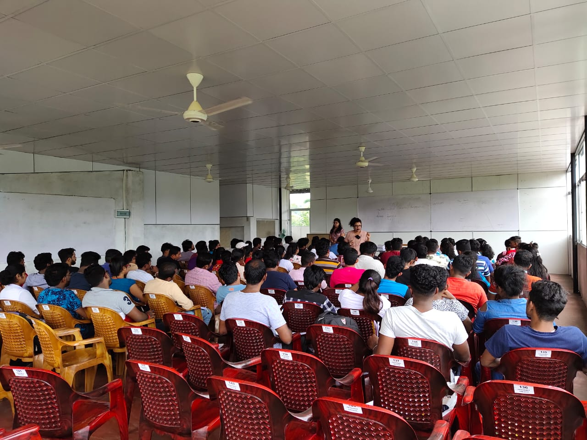

Choosing a school · 8 min read
How to Choose an English-Medium School in Athurugiriya
A practical way to compare learning, care, communication and the everyday experience your child will have.
Read the guideParent resources
Clear, practical guidance for families choosing a school, preparing for kindergarten and helping children become capable, confident learners.
There is no single formula for raising or teaching a child. These articles offer questions, routines and observations that families can adapt to their own circumstances. For information about Princeway College programmes or admissions, please contact the school directly.
Choosing a school · 8 min read
A practical way to compare learning, care, communication and the everyday experience your child will have.
Read the guide
Early learning · 7 min read
Readiness is less about worksheets and more about independence, communication, curiosity and secure routines.
Read the checklist
Curriculum · 8 min read
What changes when the curriculum is taught in English—and what families can do to support understanding.
Read the guide
Communication · 8 min read
Low-pressure ways to develop vocabulary, fluency and the courage to keep speaking while still learning.
Explore the ideas
Admissions · 7 min read
A useful conversation guide for school visits, covering teaching, wellbeing, communication and practical arrangements.
Prepare your questions
Confidence & belonging · 8 min read
How communication, responsibility and real-world participation help confidence travel with a child through life.
Read the articleLearning at Princeway
Explore our English-medium kindergarten and primary programmes in Korathota, Athurugiriya.